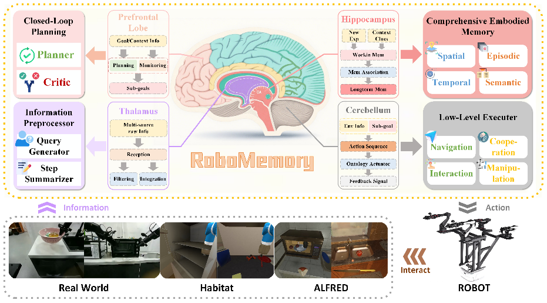

Publications
* equal contribution † corresponding author Representative papers are highlighted.



Neural Network Aided Kalman Filtering with Model Predictive Control Enables Robot-Assisted UAV Recovery and Suspended Payload Capture on a Wavy Surface
arXiv, 2025
This work was completed but has not been submitted to any conference or journal. The decision reflects timing constraints and considerations among the authors. The arXiv version is a preliminary draft containing unverified sections; the released video and methodology are provided for reference only.